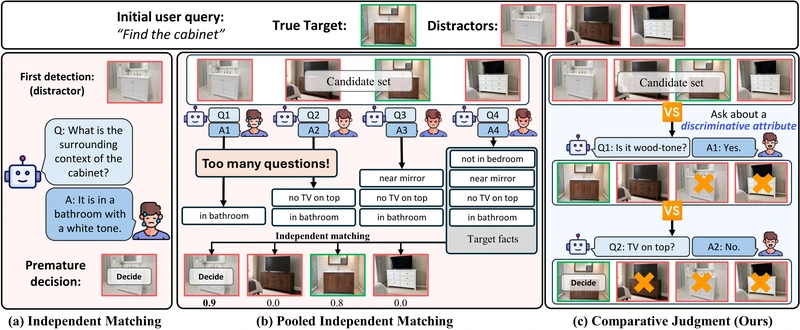
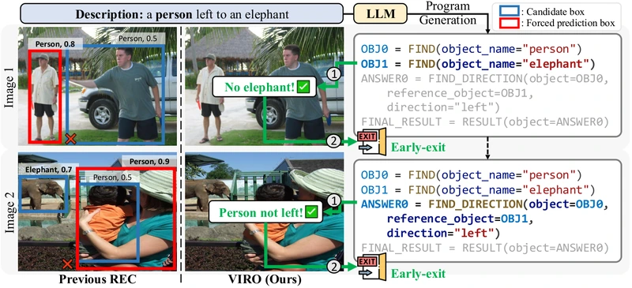
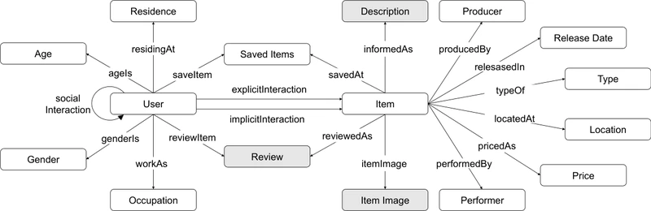
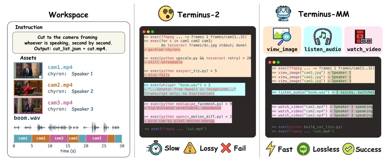
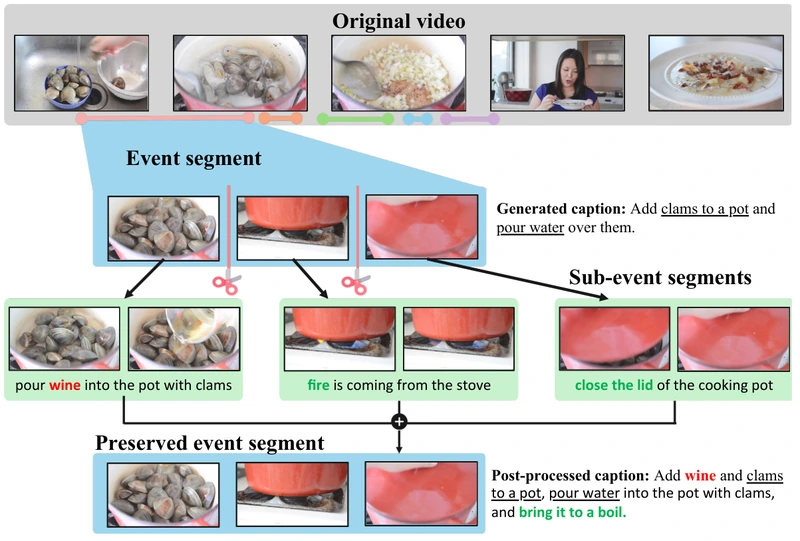

Junhyuk Kwon
I like AI that people can actually use and interact with. I'm interested in real user behavior and building products people genuinely enjoy using.
I started in Electrical Engineering and chose to move into Applied AI. It's been a good fit: I enjoy building and testing ideas, and the results have given me confidence in that choice.
Feel free to get in touch at tree.jhk@gmail.com.
News
| ProCompNav is accepted to NeurIPS 2026 as an Oral presentation (Top 0.36% - 112/30,709 submissions). | |
| Completed an AI Research Internship at KT Corp. | |
| VIRO is accepted to CVPR 2026. | |
| RecKG is accepted to ACM SAC 2024 as an Oral presentation. |
Education
| Mar, 2025 – Feb, 2027 |
Pohang University of Science and Technology (POSTECH), Pohang, South Korea M.S. in Graduate School of Artificial Intelligence Advisor: Prof. Jungseul Ok |
|---|---|
| Mar, 2018 – Feb, 2025 |
Inha University, Incheon, South Korea B.S. in Electrical Engineering and Artificial Intelligence (Double Major) Undergraduate Research Advisor: Prof. Young-Duk Seo (KDD Lab) |
Publications
-

ProCompNav: Proactive Instance Navigation with Comparative Judgment for Ambiguous User QueriesNeural Information Processing Systems (NeurIPS), 2026 Oral (Top 0.36% - 112/30,709 submissions) -

-

Preprint
-

-

SegmentWeave: Post-Processing Framework for Enhanced Dense Video CaptioningUnder review 2026
Honors
| 2024 | Grand Prize (2nd of 12), Inha AI Challenge — LLM-based Question Answering |
|---|---|
| 2024 | Undergraduate Paper Award, Korea Computer Congress (Top 12.8%) |
| 2023 | Excellence Award (2nd of 28), Hyundai Motor Group CTO AI Competition |
Experience
Research & Industry
| Jul – Aug, 2026 | AI Research Intern, KT Corp One of Korea’s largest telecom and AI companies, serving 30%+ of the country’s mobile users. |
|---|---|
| Mar, 2023 – Feb, 2025 | Undergraduate Researcher, Inha University KDD Lab Knowledge Graphs, Recommender Systems, and LLMs |
| Jul – Sep, 2024 | AI Research Intern, Growdle |
Additional
| Sep, 2022 – Feb, 2023 | NAVER Boostcamp AI Tech, Recommender Systems |
|---|---|
| Jun, 2019 – Jan, 2021 | Korean Augmentation to the U.S. Army (KATUSA) |